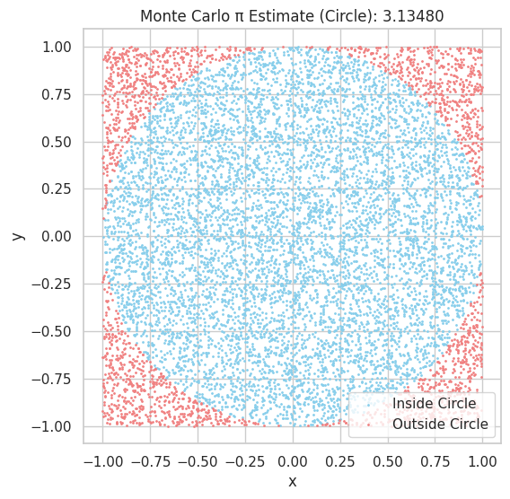
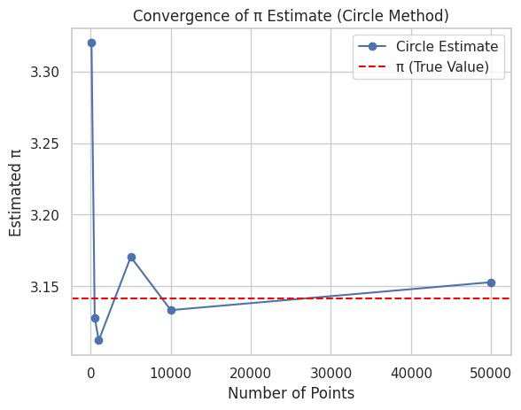
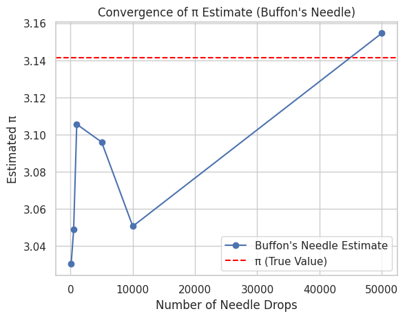

Estimating π using Monte Carlo Methods with:
- 🔵 Part 1: Circle-Based Simulation
- 🪡 Part 2: Buffon’s Needle
- 📊 Visuals, ✅ Explanations, 📈 Analysis
🎯 Estimating π with Monte Carlo Methods
🍰 Part 1: Estimating π Using a Circle
🧠 Idea:
- Draw a square (side = 2) around a unit circle (radius = 1).
- Random points fall randomly inside the square.
- Count how many fall inside the circle.
- Since area of circle = πr² = π and area of square = 4, \(\pi \approx 4 \cdot \left(\frac{\text{points in circle}}{\text{total points}}\right)\)
⚙️ Code
import numpy as np
import matplotlib.pyplot as plt
# Parameters
np.random.seed(42)
total_points = 10000
# Generate random (x, y) in square [-1, 1] x [-1, 1]
x = np.random.uniform(-1, 1, total_points)
y = np.random.uniform(-1, 1, total_points)
# Distance from origin
dist = x**2 + y**2
# Points inside circle
inside = dist <= 1
pi_estimate = 4 * np.sum(inside) / total_points
# Plot
plt.figure(figsize=(6, 6))
plt.scatter(x[inside], y[inside], color="skyblue", s=1, label="Inside Circle")
plt.scatter(x[~inside], y[~inside], color="lightcoral", s=1, label="Outside Circle")
plt.title(f"Monte Carlo π Estimate: {pi_estimate:.5f}")
plt.xlabel("x")
plt.ylabel("y")
plt.legend()
plt.axis("equal")
plt.grid(True)
plt.show()
📈 Convergence Check (Circle Method)
trials = [100, 500, 1000, 5000, 10000, 50000]
estimates = []
for N in trials:
x = np.random.uniform(-1, 1, N)
y = np.random.uniform(-1, 1, N)
inside = x**2 + y**2 <= 1
estimates.append(4 * np.sum(inside) / N)
# Plot convergence
plt.plot(trials, estimates, marker='o')
plt.axhline(np.pi, color='red', linestyle='--', label='π (True Value)')
plt.title("Convergence of π Estimate (Circle Method)")
plt.xlabel("Number of Points")
plt.ylabel("Estimated π")
plt.legend()
plt.grid(True)
plt.show()
🪡 Part 2: Estimating π Using Buffon’s Needle
🧠 Idea:
- Drop a needle of length L ≤ d between parallel lines d units apart.
- Probability of crossing a line is: \(P = \frac{2L}{\pi d}\)
-
Rearranged: \(\pi \approx \frac{2L \cdot N}{d \cdot H}\) where:
-
N = total drops
- H = hits (crossing a line)
⚙️ Code
import numpy as np
import matplotlib.pyplot as plt
np.random.seed(42)
# --- Part 1: Circle Monte Carlo ---
def estimate_pi_circle(total_points):
x = np.random.uniform(-1, 1, total_points)
y = np.random.uniform(-1, 1, total_points)
inside = x**2 + y**2 <= 1
pi_estimate = 4 * np.sum(inside) / total_points
return pi_estimate, x, y, inside
# Plot circle method points and estimate
total_points = 10000
pi_estimate, x, y, inside = estimate_pi_circle(total_points)
plt.figure(figsize=(6,6))
plt.scatter(x[inside], y[inside], color="skyblue", s=1, label="Inside Circle")
plt.scatter(x[~inside], y[~inside], color="lightcoral", s=1, label="Outside Circle")
plt.title(f"Monte Carlo π Estimate (Circle): {pi_estimate:.5f}")
plt.xlabel("x")
plt.ylabel("y")
plt.legend()
plt.axis("equal")
plt.grid(True)
plt.show()
# Convergence plot for circle method
trials = [100, 500, 1000, 5000, 10000, 50000]
estimates_circle = []
for N in trials:
pi_val, _, _, _ = estimate_pi_circle(N)
estimates_circle.append(pi_val)
plt.plot(trials, estimates_circle, marker='o', label='Circle Estimate')
plt.axhline(np.pi, color='red', linestyle='--', label='π (True Value)')
plt.title("Convergence of π Estimate (Circle Method)")
plt.xlabel("Number of Points")
plt.ylabel("Estimated π")
plt.legend()
plt.grid(True)
plt.show()
# --- Part 2: Buffon's Needle ---
def estimate_pi_buffon(L, d, N):
theta = np.random.uniform(0, np.pi/2, N)
x_center = np.random.uniform(0, d/2, N)
hits = x_center <= (L/2)*np.sin(theta)
H = np.sum(hits)
if H == 0:
return np.nan
return (2 * L * N) / (d * H)
L = 1 # needle length
d = 2 # distance between lines
N = 10000
pi_buffon = estimate_pi_buffon(L, d, N)
print(f"Buffon's Needle π Estimate: {pi_buffon:.5f}")
# Convergence plot for Buffon's Needle
estimates_buffon = []
for N in trials:
pi_val = estimate_pi_buffon(L, d, N)
estimates_buffon.append(pi_val)
plt.plot(trials, estimates_buffon, marker='o', label="Buffon's Needle Estimate")
plt.axhline(np.pi, color='red', linestyle='--', label='π (True Value)')
plt.title("Convergence of π Estimate (Buffon's Needle)")
plt.xlabel("Number of Needle Drops")
plt.ylabel("Estimated π")
plt.legend()
plt.grid(True)
plt.show()
  
💬 Observations
- The circle method converges more quickly and visually.
- Buffon’s needle is less efficient — more randomness, slower convergence.
- Both methods show how randomness + geometry = powerful math.